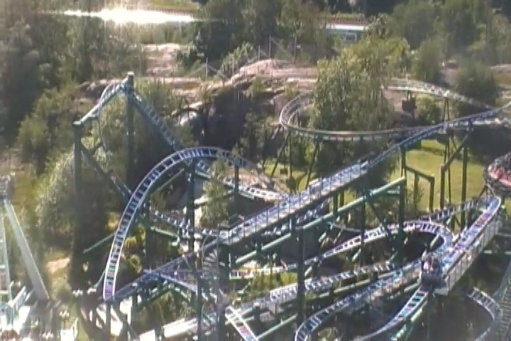

| |
Salama Review

We're here at Linnanmäki, where we'll be reviewing Salama. The park's spinning coaster. Now this coaster is one that looks really cool. It has all these twists and turns, and it's big and spread out. So this looks like one of the best spinning coasters there are. But looks can be decieving. So let's cut all the bullsh*t and get riding. Hop in the cars, pull down the lap bar, anda away we go. We roll around a turn and head up the lifthill. If you're facing backwards, you get a really good view of Hurjakura, the parks rapids ride, as the entire ride is built right on top of it. So, mental note. If you want really good Salama shots, go ride their rapids ride. But that's enough talk. We crest the lifthill, head down a curved drop, only to head down another curved drop. This gets us some decent speed, and apparently, on some rides, it can start spinning a lot, but I never got any crazy spinning from this ride. We then go into one of those vertical horseshoe elements. They don't really get us spinning, but it's still fun. We head up a curved hill, and go through a midcourse brake run, before heading around another curved hill. This leads us into this weird sort of curved airtime hill, that actually changes our direction. Except there's no airtime there whatsoever. Head around another curve, and glide into another midcourse brake. I'm starting to sense a pattern with this ride. We head down another curved drop, and head around some more curvy S bends. This doesn't really get us spinning that much (at least it didn't when I rode it). We head down another curved drop, head around another turn, and right into the brake run we go. Yeah. This is a ride that looks much better than it is, simply because it's very spread out, and has a lot of curves to it. But there's not a ton to it outside of that. But even so, it's still a fun ride. And hey. Maybe with a better weight distribution, you could get this ride to really start spinning.
6/10
Location: Linnanmäki
Opened: 2008
Built by: Maurer Söhne
Last Ridden: June 28, 2014
Salama Photos


Home
|